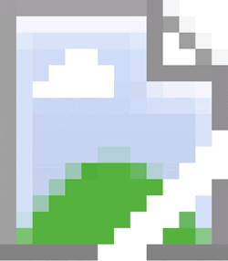

## Welcome to the
**BEST!**
blog I ever made. Notes Page: [Notes](https://dashpen.github.io/blog/notes/) Vocab Page: [Vocab](https://dashpen.github.io/blog/vocab/) This is
**not**
a broken image!
 # Posts